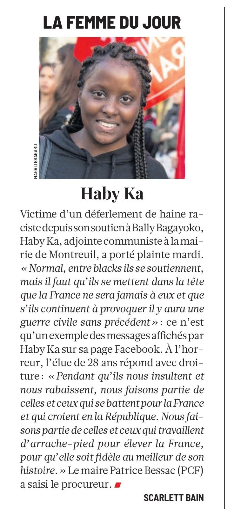

Revue de presse
Attaques racistes sur les réseaux sociaux, l’élue communiste Haby Ka porte plainte
Date indiquée par Facebook · 23 avril 2026
Repères éditoriaux
L’Humanité donne la parole à Haby Ka. L’élue communiste porte plainte après une vague d’attaques racistes sur les réseaux sociaux. L’article que nous relayons rapporte sa démarche et lui rend la parole.
Texte conservé avec la publication
« Nous faisons partie de celles et ceux qui se battent pour la France » : l'élue PCF Haby Ka porte plainte après une vague de haine raciste sur les réseaux sociaux - l'Humanité
« Nous faisons partie de celles et ceux qui se battent pour la France » : l'élue PCF Haby Ka porte plainte après une vague de haine raciste sur les réseaux sociaux - @[100064860845478:2048:l'Humanité]

Sources
Archive rouge · export Facebook · AR-0002-FB-00805
À lire aussi · À Niort, appel à se rassembler en mémoire de Lyhanna et en soutien aux victimes